アイデアの泉神社/山形県
山形県である。米沢である。
米沢と言えば上杉景勝、直江兼続、前田慶次といった戦国時代のヒーローの街。
特に上杉謙信を祀る上杉神社はこの街の精神的支柱といっても過言ではないだろう。
その上杉神社と米沢駅を結ぶ通り沿いに奇妙なスポットがある。
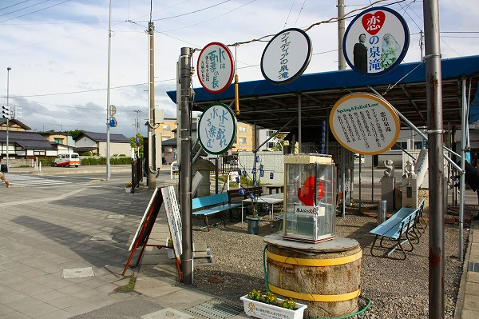
場所は最上川の近く、大通りの傍にこのような看板が掲げられている。
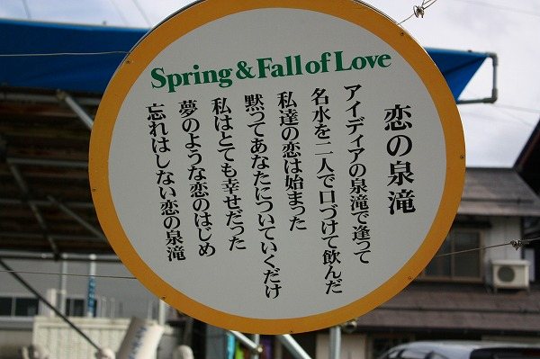
アイディアの泉？恋の泉？
なんだそりゃ。
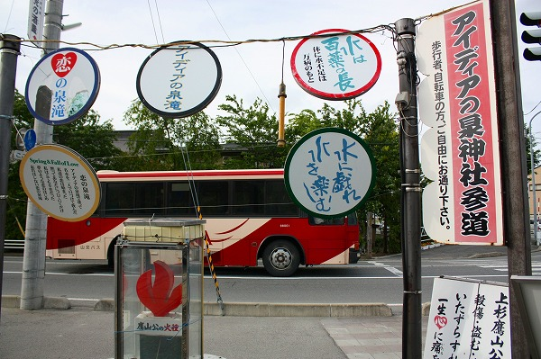
傍目に見るとセルフビルド系ポケットパークのような場所だが、アイデアの泉神社と書かれている。
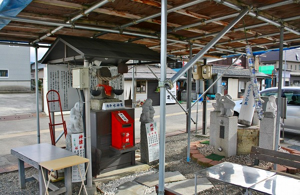
どうみても神社には見えないが、神社と言い張っているからには寄らぬわけにもまいるまい。
上杉神社に参拝する予定だったのだが、とりあえずこちらの神社を先に参拝（？）してみよう。
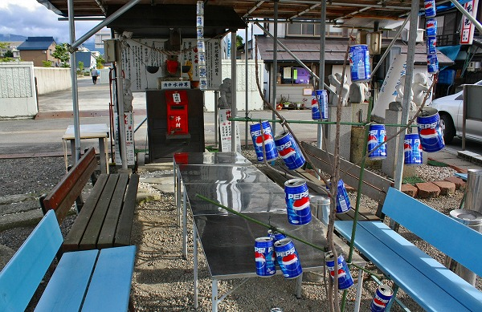
とはいえやっぱり神社要素は薄く、近所の皆さんがくつろげるようにベンチが設置してあるポケットパークにしか見えない。
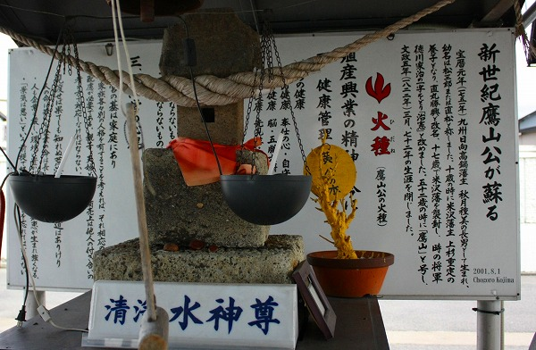
しかしポケットパークとは一線を画すのは名君として名高い9代藩主上杉鷹山を推す思い入れたっぷりのメッセージが書かれた看板がある事。
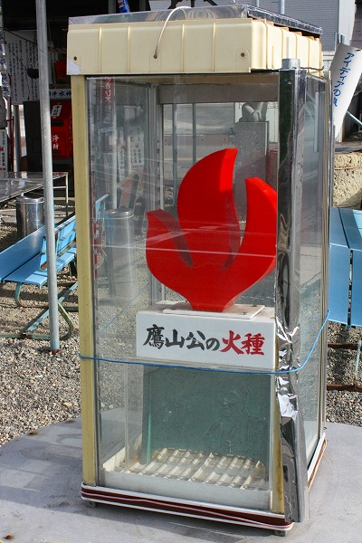
業務用の冷蔵庫の中に鷹山公の火種なるものがあった。
うむー。
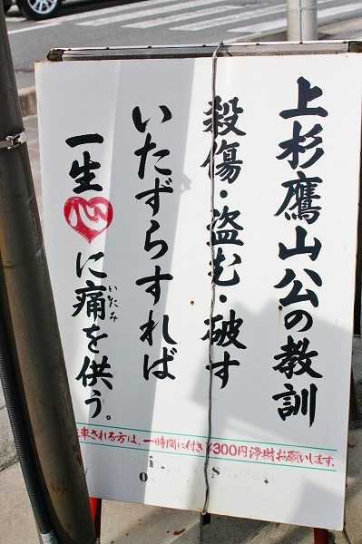
チョット思い入れが強すぎてついていけない感がムンムンですなー。
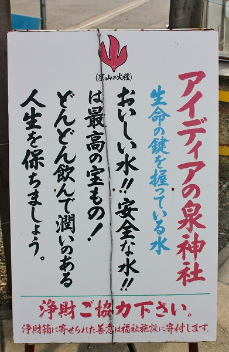
そして肝心のアイデアの泉なのだが…
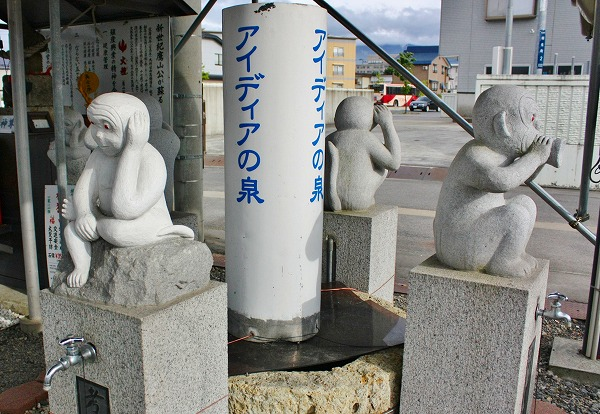
こんな感じです。
四体の猿の石像の台座にそれぞれ蛇口が付いている。
泉だ、滝だ、と煽ってくれたが蛇口をひねって出すタイプのお水でした。
いや、別に蛇口だから良くないとは言わないが、少なくとも滝じゃないじゃん！とのツッコミだけはさせてください。
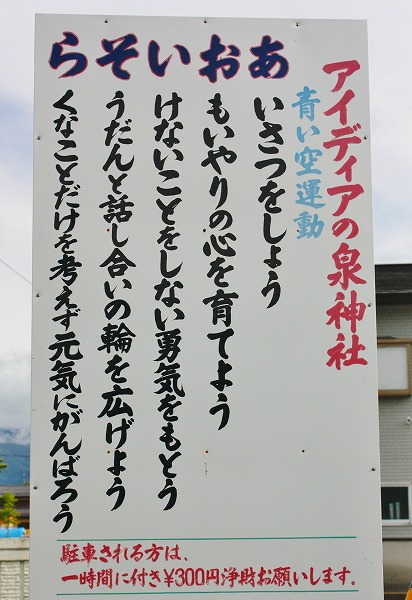
ちなみに四体の猿は見ざる言わざる聞かざる…ではなく見る猿、言う猿、聞く猿、そして考える猿だそうで…。
お賽銭をしてからお水を頂きました。
うん。水の味がしましたね…。
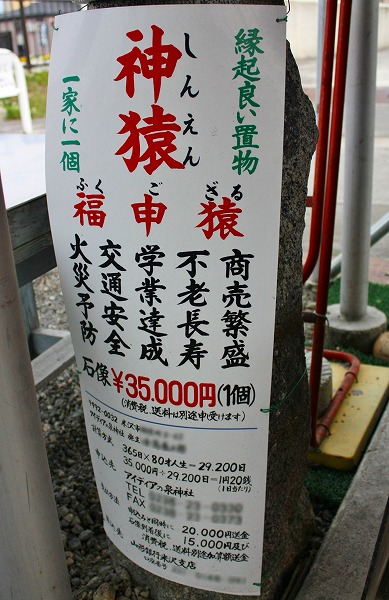
おサルの置物も販売しているようです。
35000円也。
人生80年として日割り計算すると1日1円20銭だそうです。
そんなコスパの計算の仕方ってある？
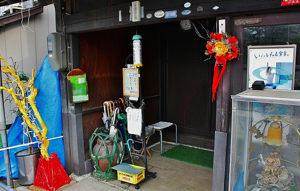
神社の隣には同じテイストのお家が。
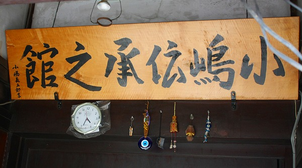
多分この人が作った神社なんだろうなあ。
紹介しておいてナンだが、イマイチ芯のつかめない場所であった。
個人的には結構好きな場所なのだが、客観的に考えれば読者諸氏にわざわざお付き合いさせる程ではなかったかな、という想いもあり、どうもスイマセン的な気持ちで一杯です、はい。
さっ、気を取り直して上杉神社に行こ、っと。
（このレポートは2008年訪問時のものです。現在の状況は若干変わっているようです。2022.03.追記）
2008.05.
珍寺大道場 HOME